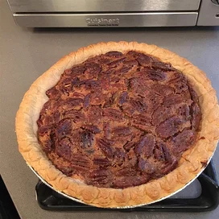

Pecan Pie

Down-home Texas pecan pie that's not overly sweet. Easy to make, and great served warm with a scoop of vanilla ice cream and a few lines of chocolate syrup.
Making a very neat pecan pie
Ingredients
- 3 eggs
- 1 cup dark corn syrup
- 1 cup white sugar
- 2 tablespoons sifted all-purpose flour
- 1 teaspoon vanilla extract
- 1 ½ cups chopped pecans
- 1 (9 inch) deep dish pie crust
Directions
- Preheat the oven to 350 degree F (175 degree C).
- In a medium bowl, mix together the sugar and flour until flour is blended in. Stir in the eggs, corn syrup and vanilla. Mix in the pecans and pour the filling into the pie crust.
- Bake for 50 to 55 minutes in the preheated oven, until a knife inserted halfway between center and edge comes out clean. Cool.